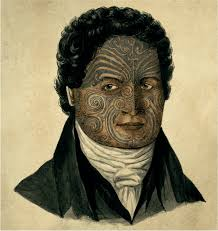
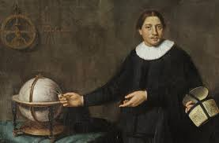
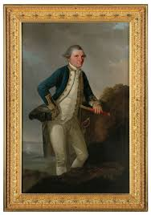
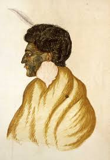
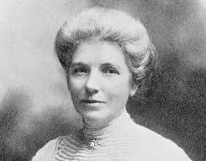
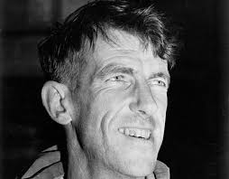
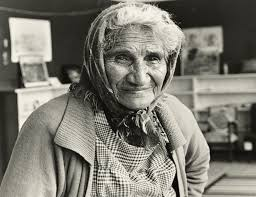
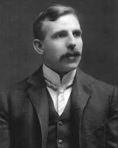

Kupe

Kupe is remembered in Māori tradition as one of the first great Polynesian navigators to discover Aotearoa. His voyages became an important part of New Zealand's history and Māori culture.
Abel Tasman

Dutch explorer Abel Tasman became the first recorded European to reach New Zealand in 1642. Although his visit was brief, it marked the beginning of European knowledge of the islands.
Captain James Cook

James Cook mapped much of New Zealand's coastline during his voyages in 1769. His detailed maps greatly improved European understanding of the country.
Te Rauparaha

Te Rauparaha was a famous Māori chief and military leader of Ngāti Toa. He is also credited with composing the haka "Ka Mate", which is performed around the world today.
Kate Sheppard

Kate Sheppard led the campaign for women's voting rights. Thanks to her efforts, New Zealand became the first self-governing country where women could vote in 1893.
Sir Edmund Hillary

Sir Edmund Hillary became one of the first people to reach the summit of Mount Everest in 1953. He is one of New Zealand's most respected explorers and humanitarians.
Dame Whina Cooper

Dame Whina Cooper was a Māori leader who fought for Māori land rights. She became nationally recognised after leading the 1975 Māori Land March.
Ernest Rutherford

Ernest Rutherford was one of the world's greatest physicists. His discoveries about the atom earned him the Nobel Prize and helped shape modern science.